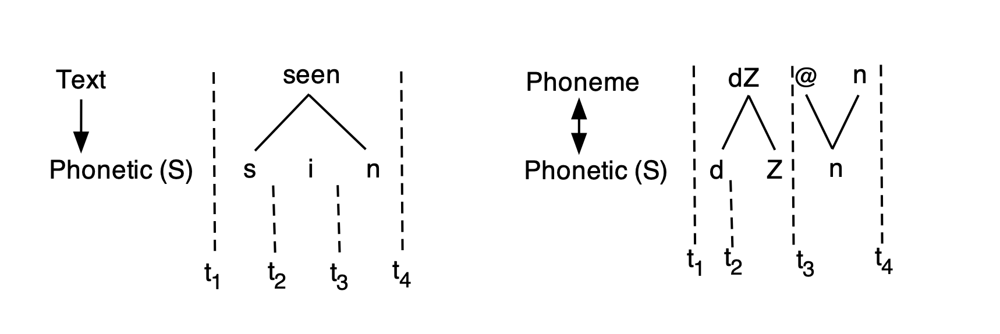
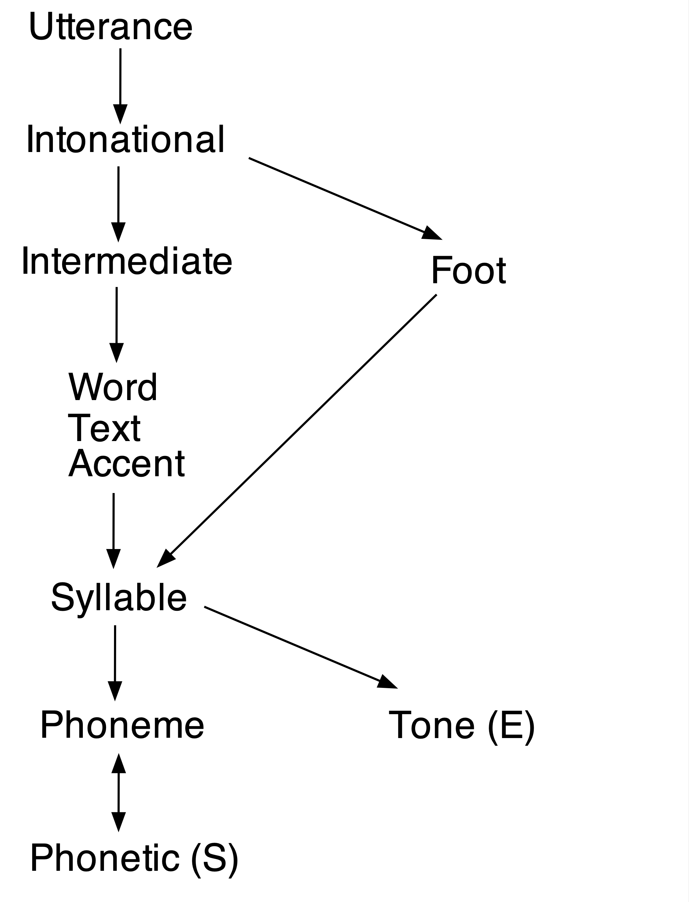
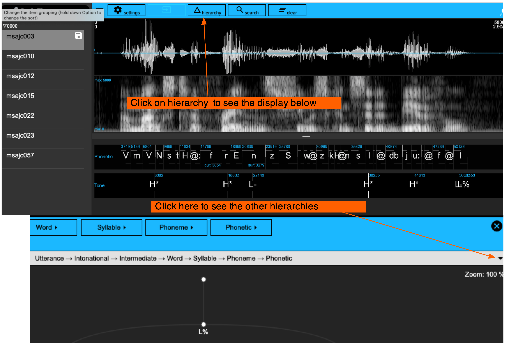

library(tidyverse)
library(magrittr)
library(emuR)
library(wrassp)2 First steps in using the Emu Speech Database Management System
2.1 Preliminaries and loading libraries
Follow the setup instructions given in the setup chapter, i.e. download R and RStudio, create a directory on your computer where you will store files for this course, make a note of the directory path, create an R project that accesses this directory, and install all indicated packages.
For this and subsequent tutorials, access the tidyverse,magrittr, emuR, and wrassp libraries:
2.2 Accessing an existing Emu speech database
For a first look at the properties of Emu databases, we will use the function create_emuRdemodata() to download and access a demonstration database.
create_emuRdemoData(dir = tempdir())The option dir = tempdir() tells R to store the demo database in a temporary directory, the path of which is determined internally by the tempdir() function.
We can now use the command list.dirs() to have a look inside the temporary directory and see which directories are in there. (recursive=FALSE tells R not to return the names of all subdirectories, and full.names=FALSE tells R not to return the full paths to directories).
list.dirs(tempdir(), recursive=FALSE, full.names=FALSE)[1] "emuR_demoData"Our demo data is stored in the first subdirectory, emuR_demoData. Let’s have a look at what is stored in there. (The second directory with the long obscure name is always created when a new R session is started).
#store path name as an object
path.emuDB <- paste0(tempdir(), "/emuR_demoData")
list.dirs(path.emuDB, recursive=FALSE, full.names=FALSE)[1] "ae_emuDB" "BPF_collection" "legacy_ae"
[4] "TextGrid_collection" "txt_collection" There are some folders containing collections of sound files and annotation files. (In Chapter 4 we will see how to convert an existing collection of sound files and TextGrids to an Emu database). There is also a folder called ae_emuDB, which contains our actual demo database. The database is called ae, and the string _emuDB is always appended to Emu databases. The full path to this Emu database can be accessed with the file.path() function, like so:
file.path(tempdir(), "emuR_demoData", "ae_emuDB")[1] "C:\\Users\\rasmu\\AppData\\Local\\Temp\\RtmpU1LEj3/emuR_demoData/ae_emuDB"In order to see the files that are physically stored in the ae_emuDB, first save the path name and then use the function list.files():
path.ae <- file.path(tempdir(), "emuR_demoData", "ae_emuDB")
list.files(path.ae)[1] "0000_ses" "ae_DBconfig.json"The file ae_DBconfig.json is a template that stores information about the defining properties of the ae database; see Section 2.3. The utterances are in this case all stored in the directory 0000_ses. To look inside this directory:
list.files(file.path(path.ae, "0000_ses"))[1] "msajc003_bndl" "msajc010_bndl" "msajc012_bndl" "msajc015_bndl"
[5] "msajc022_bndl" "msajc023_bndl" "msajc057_bndl"This shows that there 0000_ses contains 7 directories of so-called bundles bndl. Emu organises things such that all the files that belong to the same utterance are always in the same bundle. The utterance identifier precedes _. Thus in this case, it is clear from the output above that there are 7 utterances whose identifiers are msajc003, msajc010, msajc012, msajc015, msajc023, msajc057. We can again use list.files() in combination with file.path() to see what files there are for any utterance, in this case for msajc003:
list.files(file.path(path.ae, "0000_ses", "msajc003_bndl"))[1] "msajc003.dft" "msajc003.fms" "msajc003.wav"
[4] "msajc003_annot.json"This shows that msajc003 has the following files:
_annot.json: this stores information about the annotations..dft: this contains a derived signal file of DFT (spectral) data obtained from the speech waveform; spectral processing is discussed in more detail in Chapter 12..fms: this contains formant data also obtained from the speech waveform..wav: this contains the waveform itself.
.dft and .fms are just examples of the sorts of signal files that can be stored in an Emu database – this could also have been signals like pitch tracks or intensity, but for the advanced user, essentially any signal can be stored in an Emu database. We will see more examples in Chapter 8.
In order to access the ae emuDB in R, the above path needs to be stored and passed to the function load_emuDB() that reads the database into R. The output of load_emuDB() should always be assigned to an object in R, or you will not be able to access it later. Here we store it as ae.
# store the above path name
path2ae <- file.path(tempdir(), "emuR_demoData", "ae_emuDB")
ae <- load_emuDB(path2ae, verbose=FALSE)
What does
verbose=FALSE mean?
Throughout this book you will often see us use the option verbose=FALSE when calling functions from emuR. By default emuR is pretty talkative (or verbose), meaning it will print a lot of information in the R console about the status of whatever task it is performing. This is usually quite nice, and you may want to avoid the verbose=FALSE option if you are coding along in your own R session – we mostly keep it quiet here because those messages would otherwise clutter up the book.
2.3 Some defining properties of an Emu database
The well-known function summary() can also be used with an Emu database to summarise its salient attributes:
summary(ae)── Summary of emuDB ────────────────────────────────────────────────────────────Name: ae
UUID: 0fc618dc-8980-414d-8c7a-144a649ce199
Directory: C:\Users\rasmu\AppData\Local\Temp\RtmpU1LEj3\emuR_demoData\ae_emuDB
Session count: 1
Bundle count: 7
Annotation item count: 736
Label count: 844
Link count: 785 ── Database configuration ──────────────────────────────────────────────────────── SSFF track definitions ── name columnName fileExtension fileFormat
dft dft dft ssff
fm fm fms ssff ── Level definitions ── name type nrOfAttrDefs attrDefNames
Utterance ITEM 1 Utterance;
Intonational ITEM 1 Intonational;
Intermediate ITEM 1 Intermediate;
Word ITEM 3 Word; Accent; Text;
Syllable ITEM 1 Syllable;
Phoneme ITEM 1 Phoneme;
Phonetic SEGMENT 1 Phonetic;
Tone EVENT 1 Tone;
Foot ITEM 1 Foot; ── Link definitions ── type superlevelName sublevelName
ONE_TO_MANY Utterance Intonational
ONE_TO_MANY Intonational Intermediate
ONE_TO_MANY Intermediate Word
ONE_TO_MANY Word Syllable
ONE_TO_MANY Syllable Phoneme
MANY_TO_MANY Phoneme Phonetic
ONE_TO_MANY Syllable Tone
ONE_TO_MANY Intonational Foot
ONE_TO_MANY Foot Syllable The directory shows the path where the directory is located.
Bundle count shows how many utterances there are in the database. We can query their names with the function list_bundles.
list_bundles(ae)The SSFF track definitions show which signals are currently available in the database apart from the waveforms. For this database there are signals of type dft (discrete Fourier transform, see Chapter 12) and of type fm (formant). They have extensions .dft and .fms. This information is also given by:
list_ssffTrackDefinitions(ae)The Level definitions show the available annotation levels of the database (equivalent to tiers in Praat). This information is also given by:
list_levelDefinitions(ae)As the above shows, annotation levels can be of three types: ITEM, SEGMENT, and EVENT. The annotations of ITEM levels inherit their times from the (typically) SEGMENT levels that they dominate. In a SEGMENT levels, each annotation has a start and end time, equivalent to segment tiers in Praat. In an EVENT level, each annotation is defined by a single point in time, equivalent to point tiers in Praat. A level can also be associated with one or more ATTRIBUTE levels. This information is also given by the function list_attributeDefinitions() with the database name as the first argument, and the level to be queried for attributes as the second. For example:
list_attributeDefinitions(ae, "Word")This shows that the levels Accent and Text are attributes of Word. The annotations of an ATTRIBUTE level always have identical times to those of the main level with which they are associated (thus the annotations of the Accent level have identical start and end times to those of the Word level). An ATTRIBUTE level is often used to provide additional information about annotations. In the ae database, the annotations in the Word level consist entirely of either C (content word) or F (function word). The annotations at the Text level are used to provide the orthography for each content or function word annotation; and the annotations of the Accent level are used to mark whether or not a word is prosodically accented.
The information in Link definitions of summary(ae) shows how the levels are associated with each other. This information is also provided by the function list_linkDefinitions():
list_linkDefinitions(ae)In the Emu system, annotation levels can be (but need not be) hierarchically organised with respect to each other. One reason for the hierarchical organisation of levels is to allow annotations to inherit times if these are predictable.
In the left part of Figure 2.1 for example, the start and end times of the annotation seen in the Text level are completely predictable from the annotations at the Phonetic level that is dominated by Text. Text is an item level, Phonetic is a segment level as indicated by (S). Text dominates Phonetic as shown by the vertical downward arrow. Compatibly, the Emu system provides a way for the start and end times of seen to be inherited from the annotations at the hierarchically lower SEGMENT level Phonetic. Because Text is an ITEM level that dominates Phonetic which is a SEGMENT level, annotations at the Text level inherit their times from Phonetic. Consequently, the duration of seen is \(t_4 - t_1\). Text and Phonetic stand in a ONE_TO_MANY association (as signified by the downward arrow) because an annotation at the Text level can be associated with one or more annotations at the Phonetic level, but not vice versa.

On the right, Phoneme and Phonetic stand in a MANY_TO_MANY relationship (as indicated by the double arrow) because an annotation at the Phoneme tier can map to more than one annotation at the Phonetic level and vice versa. In this hypothetical example of an annotation of the second syllable of a word like region, the single affricate annotation /dZ/ at the Phoneme level maps to a sequence of [d] and [Z] annotations at the Phonetic level, while the single annotation of the syllabic [n] at the Phonetic level maps to a sequence of annotations /@n/ at the Phoneme tier. Note that /@/ and /n/ inherit the same start and end times and therefore have the same duration of \(t_4 - t_3\) i.e. they overlap with each other in time completely.
Another reason for the hierarchical organisation of annotation levels is that it allows users to query the database in order to obtain annotations at one tier with respect to another (e.g., all orthographic annotations of the vowels in the database; all H* pitch accents in an intermediate phrase, etc.). Without this linkage, these types of queries would not be possible.
Emu allows quite a flexible configuration of annotation levels. The type of configuration can be defined by the user and will depend on the types of information that the user wants to be able to extract from the database. The configuration of annotation levels for the currently loaded ae database is shown in Figure 2.2.

ae database. ITEM levels are unmarked, SEGMENT levels are marked with (S) and EVENT levels with (E). ATTRIBUTE levels have no arrow between them (thus Text and Accent are attribute levels of Word). A downward arrow signifies domination in a ONE_TO_MANY relationship; a double arrow signifies domination in a MANY_TO_MANY relationship.Inherited times percolate up through the tree from levels with associated time information, i.e. from SEGMENT and EVENT levels upwards through ITEM levels. Thus, Phoneme is an item level which inherits its times from the SEGMENT level Phonetic. Word inherits its times from Syllable which inherits its times from Phoneme (and therefore from Phonetic) and so on all the way up to the top level Utterance. Sometimes, levels can inherit more than one set of times. In Figure 2.2, Syllable inherits times both from Phonetic (S) and from Tone (E). For the same reason, all the levels that dominate Syllable (including Foot) inherit these two sets of times.
Any two annotation levels on the same path can be queried with respect to each other, where a path is defined as levels connected by arrows. There are in fact four paths in the configuration:
Utterance→Intonational→Intermediate→Word→Syllable→Phoneme↔︎Phonetic (S)Utterance→Intonational→Root→Syllable→Phoneme↔︎Phonetic (S)Utterance→Intonational→Syllable→Tone (E)Utterance→Intonational→Intermediate→Word→Syllable→Tone (E)
From (1–4), it becomes clear that e.g. annotations of the Syllable tier can be queried with respect to Tone (e.g. which syllables contain an H* tone?) and vice versa (e.g. are there any H* tones in weak syllables?); or annotations at the Intermediate tier can be queried with respect to Word (how many words are there in an L- intermediate phrase?) and vice versa (which words are in an L- intermediate phrase?). But e.g. Phoneme and Tone can’t be queried with respect to each other, and nor can Word and Foot, because they aren’t on the same path.
2.4 Viewing and annotating an Emu database
An Emu database can be viewed and annotated in at least two ways using the serve() function. Simply passing the database object to serve() will open the Emu database within the R graphics window:
serve(ae)You’ll probably usually prefer to watch the database in a larger window; if you include the argument useViewer=FALSE, it’ll open in your default browser instead (which should preferably be Chrome). Alternatively you can click the Show in new window bottom in the RStudio viewer.
serve(ae, useViewer=F)
ae databaseIt is not the purpose of this introduction to give explicit instruction on how to annotate which is covered amply in the manual for the Emu Speech database management system, especially section 9.
However, some basic properties can be noted. These include:
- There are, as mentioned before, 7 utterances.
- The database displays two types of signals: the waveform, and the spectrogram below it.
This information about the signals being displayed is also given by the function get_signalCanvasesOrder(). This function takes the obligatory argument perspectiveName, which should be "default" unless you have created custom signal canvases (discussed further below).
get_signalCanvasesOrder(ae, perspectiveName = "default")[1] "OSCI" "SPEC"OSCI is the waveform and SPEC the spectrogram. These can be changed with the order argument in the set_signalCanvasesOrder() For example, if we want to display only the spectrogram, we can do it like so:
set_signalCanvasesOrder(ae, perspectiveName = "default", order = "SPEC")If you serve() the database again, you should see only the spectrogram:
serve(ae, useViewer = F)To restore the original order, call set_signalCanvasesOrder() again:
set_signalCanvasesOrder(ae, perspectiveName = "default",
order = c("OSCI", "SPEC"))
Adding signal canvas with
emuhelpeR
One of the most common use cases of set_signalCanvasesOrder() is to add a signal (such as the formant track fm) to the default perspective for a quick look at it. This is a little cumbersome with set_signalCanvasesOrder(), but a helper function add_signal_canvas() can be found in the emuhelpeR package. This function takes just two arguments: the database object, and the name(s) of signal tracks to add to the default perspective.
library(emuhelpeR)
add_signal_canvas(ae, add="fm")To reset the default perspective so that it shows just a waveform and spectrogram, emuhelpeR has the helper function reset_signal_canvas:
reset_signal_canvas(ae)Emu will only ever display time levels with signals (in this case there are two: Phonetic and Tone that are SEGMENT and EVENT tiers respectively). The time levels to be displayed and their order can be shown and changed with the functions get_levelCanvasesOrder() and set_levelCanvasesOrder().
get_levelCanvasesOrder(ae, perspectiveName = "default")[1] "Phonetic" "Tone" We can change the order of the Phonetic and Tone levels like so:
set_levelCanvasesOrder(ae, perspectiveName = "default",
order = c("Tone", "Phonetic"))Or display only the tone level, like so:
set_levelCanvasesOrder(ae, perspectiveName = "default", order = "Tone")The ITEM annotation levels can all be seen in the hierarchy view. The four paths identified earlier are visible when clicking on the triangle on the far right (Figure 2.3). Clicking the triangle can also be used to change to another path. The attribute levels can be seen by clicking on one of the level names displayed at the top – e.g. click on Word to show the attribute levels Text and Accent with which the Word level is associated.
emuR and pipes
If you are a regular user of the tidyverse libraries, you are probably familiar with the pipe operator %>%. You may have noticed that the first argument of emuR functions is almost always the emuDBhandle. This means that you can pipe the database object into these functions, for example
ae %>% list_ssffTrackDefinitionsae %>% list_levelDefinitionsae %>% get_levelCanvasesOrder("default")[1] "Tone"Similarly, you can view a database by calling ae %>% serve.
2.5 Functions introduced in this chapter
create_emuRdemoData(): downloads an online demo databaselist.dirs()andlist.files(): lists the directories or files within a directory on your computerfile.path(): returns the location of a directory on your computerload_emuDB(): loads an emuDB into the R environmentsummary()lists the salient contents of an emuDBlist_bundles(): lists the so-called bundles of an emuDBlist_levelDefinitions(): lists the annotation levels of tiers of an emuDBlist_attributeDefinitions(): lists the attribute tiers of an annotation tierlist_linkDefinitions(): lists the links between the tiers of an emuDBlist_ssffTrackDefinitions(): lists the available signal files of an emuDBserve(): view and annotate an emuDBget_signalCanvasesOrder(): shows what signals are being displayed whenserve()is launched.set_signalCanvasesOrder(): changes the signals to be displayed.add_signal_canvas(): adds one or more signals to thedefaultdisplay perspective (requires theemuhelpeRpackage)reset_signal_canvas(): resets thedefaultdisplay perspective so it shows the waveform and spectrogram (requires theemuhelpeRpackage)get_levelCanvasesOrder(): shows what annotation levels are being displayed whenserve()is launched.set_levelCanvasesOrder(): changes the annotation levels to be displayed.